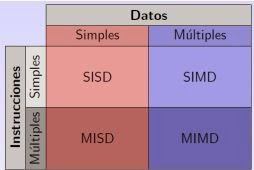
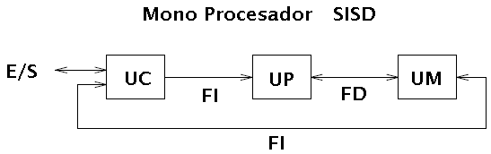

Clasificación según Flynn
Michael Flynn propuso una taxonomía para clasificar los tipos de computación paralela según el número de flujos de instrucciones y de datos que procesan los sistemas. Los cuatro modelos principales son:
1. SISD (Single Instruction, Single Data)
Es el modelo clásico de cómputo secuencial: un solo procesador ejecuta una sola instrucción sobre un único flujo de datos.
2. SIMD (Single Instruction, Multiple Data)
Una sola instrucción es ejecutada simultáneamente sobre múltiples datos. Ideal para procesamiento gráfico y aplicaciones vectoriales.
3. MISD (Multiple Instruction, Single Data)
Múltiples instrucciones se ejecutan sobre el mismo flujo de datos. Es un modelo poco común, utilizado en sistemas con alta redundancia.
4. MIMD (Multiple Instruction, Multiple Data)
Varios procesadores ejecutan instrucciones diferentes sobre conjuntos de datos distintos. Este modelo es el más flexible y usado actualmente en multiprocesadores y clusters.
4.2.2 Arquitectura de computadoras secuenciales
Estas arquitecturas ejecutan instrucciones de manera lineal y ordenada, una tras otra. Son las más comunes en computadoras personales y sistemas embebidos. Aunque son eficientes en tareas simples, presentan limitaciones al procesar grandes volúmenes de datos.

4.2.3 Arquitectura de computadoras paralelas
Estas computadoras están diseñadas para ejecutar múltiples instrucciones al mismo tiempo, utilizando varios procesadores o núcleos. Se caracterizan por su capacidad de dividir grandes tareas en partes más pequeñas, asignándolas a diferentes unidades de procesamiento.
Un ejemplo son los supercomputadores que utilizan decenas o cientos de núcleos para tareas científicas, modelado climático o inteligencia artificial.
4.2.4 Arquitectura de multiprocesadores
Un sistema multiprocesador contiene dos o más procesadores interconectados que comparten la memoria principal. Estos sistemas pueden trabajar en paralelo y son comunes en servidores y estaciones de trabajo. Se dividen en:
- Simétricos (SMP): Todos los procesadores tienen acceso equitativo a la memoria.
- Asimétricos (AMP): Un procesador controla el sistema y asigna tareas a los demás.
4.2.5 Sistemas distribuidos
Los sistemas distribuidos consisten en múltiples computadoras independientes que colaboran entre sí para ejecutar tareas. A diferencia de los multiprocesadores, cada nodo tiene su propia memoria y sistema operativo. Se comunican mediante redes para alcanzar un objetivo común.
Son utilizados ampliamente en la nube, plataformas web a gran escala y sistemas financieros distribuidos.
 >
>